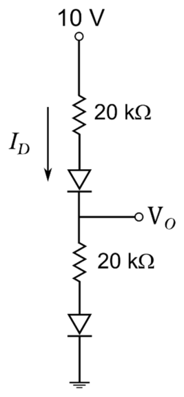
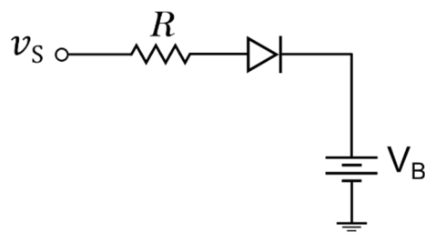
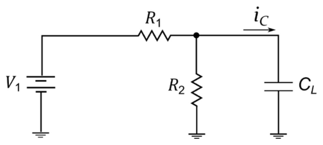
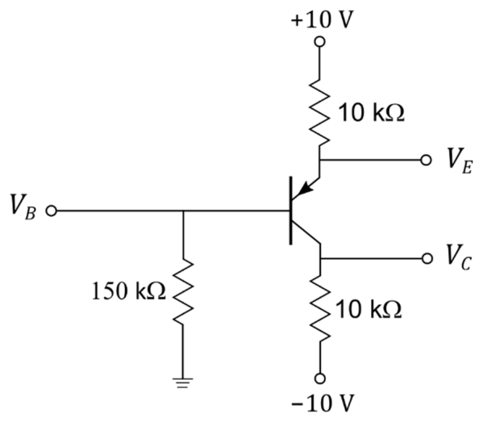
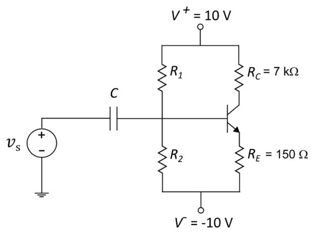
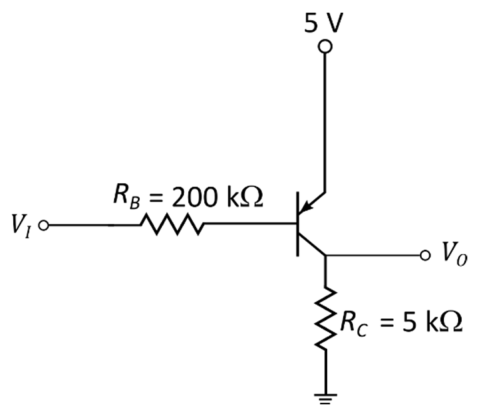
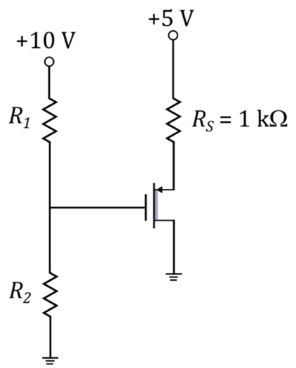
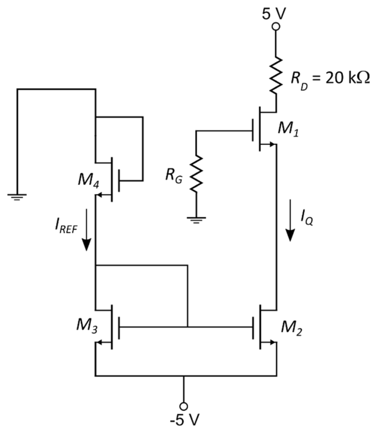

2020 Assessment 2, with a memo
The November 2020 A2 paper: four questions, 90 marks, 3 hours, open book. There is no official memo; this one was written for these notes, and every number in it was checked by calculation. Answer each question before you open its memo. The original paper is under Past papers.
00Instructions
- Answer all questions and show all working. The marks for each part are in brackets.
- Open book: the prescribed textbook and your own notes may be used. A prescribed pocket calculator may be used.
- Question 1 of the paper (0 marks) was the cover page with a declaration; it is left out here.
Q2Semiconductors and the pn junction[20]
Section A
Explain the following terms in your own words.
Extrinsic semiconductor.
Majority charge carrier.
Built-in potential.
Drift current.
A silicon semiconductor material is to be designed such that the majority carrier hole concentration is \(p_o = 5 \times 10^{16}\ \text{cm}^{-3}\).
Should donor or acceptor impurities be added to achieve this hole concentration? What concentration of dopant impurity atoms should be added?
What is the concentration of free electrons at \(T = 324\) K?
Determine the increase in forward bias voltage required to increase the conduction current by a factor of 20 for a silicon pn junction diode at a temperature of 315 K. Assume the diode is strongly biased in the forward direction.
Memo for question 2
Approach. (a) is definitions: each mark is one idea, in your own words. (b) uses the fact that a dopant concentration far above \(n_i\) sets the majority carrier concentration, then the mass-action law \(n_o p_o = n_i^2\). (c) uses the diode equation without the −1 term.
(a)(i)Extrinsic semiconductor[2]
- 1
A semiconductor into which controlled amounts of impurity atoms have been added: donors (group V, such as phosphorus) or acceptors (group III, such as boron).
- 1
Its electron and hole concentrations are set by the doping rather than by the material alone, so one carrier type dominates and the conductivity can be designed.
(a)(ii)Majority charge carrier[2]
- 1
The type of charge carrier present in the larger concentration in a doped semiconductor.
- 1
Electrons in n-type material (donor doped); holes in p-type material (acceptor doped).
(a)(iii)Built-in potential[3]
- 1
When p and n material meet, holes diffuse into the n side and electrons into the p side, leaving the fixed ionised acceptors and donors uncovered: the space-charge (depletion) region.
- 1
The charge there sets up an electric field from the n side to the p side, and a potential difference across the junction with no voltage applied: the built-in potential, \(V_{bi} = V_T \ln(N_a N_d / n_i^2)\).
- 1
In equilibrium it is a barrier that balances diffusion with drift, so no net current flows. It cannot be measured with a voltmeter.
(a)(iv)Drift current[2]
- 1
Current caused by charge carriers moving under an applied electric field: holes along the field, electrons against it.
- 1
Its density is \(J_{drf} = e(n\mu_n + p\mu_p)E\): proportional to the field, the carrier concentrations and their mobilities.
(b)(i)Dopant type and concentration[2]
- 1
Holes must be the majority carriers, so the material must be p-type: add acceptor impurities.
- 1
With \(N_a \gg n_i\), \(p_o \approx N_a\), so \(N_a = 5 \times 10^{16}\ \text{cm}^{-3}\).
(b)(ii)Electron concentration at 324 K[4]
- 1
Intrinsic concentration: \(n_i = B T^{3/2} e^{-E_g/2kT}\), with \(B = 5.23 \times 10^{15}\ \text{cm}^{-3}\text{K}^{-3/2}\) and \(E_g = 1.1\) eV for silicon.
- 1
\(kT = (86.17 \times 10^{-6})(324) = 0.02792\) eV, so \(n_i = (5.23 \times 10^{15})(324)^{3/2} e^{-1.1/(2 \times 0.02792)} = 8.49 \times 10^{10}\ \text{cm}^{-3}\).
- 1
Mass-action law: \(n_o p_o = n_i^2\), so \(n_o = n_i^2/p_o\).
- 1
\(n_o = \dfrac{(8.49 \times 10^{10})^2}{5 \times 10^{16}} = 1.44 \times 10^{5}\ \text{cm}^{-3}\).
Check. At 300 K the same steps give \(n_i = 1.57 \times 10^{10}\), the familiar \(1.5 \times 10^{10}\ \text{cm}^{-3}\). The 24 K rise multiplies \(n_i\) by 5.4 and \(n_o\) by its square.
(c)Forward voltage for 20 times the current[5]
- 1
Strong forward bias: \(e^{V_D/V_T} \gg 1\), so \(I_D \approx I_S e^{V_D/V_T}\).
- 1
Ratio of two currents: \(\dfrac{I_{D2}}{I_{D1}} = e^{(V_{D2} - V_{D1})/V_T} = 20\). \(I_S\) cancels.
- 1
So \(\Delta V_D = V_T \ln 20\).
- 1
\(V_T = kT/e = (86.17 \times 10^{-6})(315) = 0.02714\) V.
- 1
\(\Delta V_D = 0.02714 \times \ln 20 = 0.02714 \times 2.996 = 81.3\) mV.
Q3Diode circuits and SPICE[20]
Consider the circuit below. Calculate \(I_D\) and \(V_O\) if \(V_\gamma = 0.7\) V and \(r_f = 0\ \Omega\) for both diodes.

A battery charging circuit is shown below. Assume that \(V_B = 10\) V, \(R = 200\ \Omega\), \(V_\gamma = 0.7\) V and \(r_f = 0\ \Omega\). The input signal is \(v_S = 25 \sin(\omega t)\) V. Calculate the portion (percentage) of the total cycle of the input signal over which the diode is conducting current.

A SPICE analysis is required for the circuit shown below. The component values are \(V_1 = 20\) V, \(R_1 = 2\ \text{k}\Omega\), \(R_2 = 1\ \text{M}\Omega\) and \(C_L = 15\ \mu\text{F}\).

Redraw the circuit with node labels for analysis in NgSpice. Make provision in your circuit for the measurement of the current \(i_C\).
Give the NgSpice code that will correctly define the components in the circuit.
Give the line of code to plot the voltage over the resistor \(R_1\), and the line of code to plot the current \(i_C\).
Memo for question 3
Approach. (a) Assume both diodes conduct, solve the single loop, then check the current is positive. (b) The diode conducts only while \(v_S\) exceeds \(V_B + V_\gamma\); find those two angles. (c) SPICE measures current only through a voltage source, so a 0 V source goes in series with \(C_L\).
(a)Two diodes in series[5]
- 1
Assume both diodes are forward biased: each drops \(V_\gamma = 0.7\) V.
- 1
KVL from 10 V to ground: \(10 = 20k\,I_D + 0.7 + 20k\,I_D + 0.7\).
- 1
\(I_D = \dfrac{10 - 1.4}{40\ \text{k}\Omega} = 0.215\) mA.
- 1
\(V_O\) is above the lower resistor and diode: \(V_O = 0.7 + (20\ \text{k}\Omega)(0.215\ \text{mA}) = 5.00\) V.
- 1
\(I_D = 0.215\) mA > 0 flows in each diode’s forward direction, so the assumption holds. (From the top: \(10 - 4.3 - 0.7 = 5.00\) V.)
(b)Conduction angle of the charger[5]
- 1
The diode conducts when \(v_S \ge V_B + V_\gamma = 10.7\) V; below that it is reverse biased or off.
- 1
Turn-on: \(25 \sin\theta_1 = 10.7\), so \(\sin\theta_1 = 0.428\).
- 1
\(\theta_1 = \sin^{-1}(0.428) = 25.34^\circ\).
- 1
By symmetry it turns off at \(\theta_2 = 180^\circ - 25.34^\circ = 154.66^\circ\).
- 1
Fraction of the cycle: \(\dfrac{154.66 - 25.34}{360} = 0.3592\), so 35.9 %.
The diode conducts only over the shaded part of the positive half cycle, from 25.3° to 154.7°. The peak charging current is \((25 - 10.7)/200 = 71.5\) mA.
(c)(i)Circuit with node labels[2]
- 1
Number every node, with ground as node 0: node 1 at the top of \(V_1\), node 2 between \(R_1\) and \(R_2\), node 3 at the top of \(C_L\).
- 1
Put a 0 V source, Vic, between nodes 2 and 3, in series with \(C_L\), with its + terminal at node 2. SPICE reports the current through a voltage source, entering its + terminal, so this is \(i_C\) in the direction shown.
Nodes are circled. The 0 V source Vic changes nothing in the circuit; it only gives SPICE a branch whose current is \(i_C\).
(c)(ii)NgSpice netlist[6]
- 1
V1 1 0 DC 20: the source, + at node 1. - 1
R1 1 2 2k - 1
R2 2 0 1Meg. Write1Meg, not1M: SPICE reads M as milli, so1Mwould be 1 mΩ. - 1
Vic 2 3 DC 0: the 0 V source that measures \(i_C\). - 1
CL 3 0 15u - 1
An analysis to run:
.tran 0.5m 200m uic. The time constant is \((R_1 \parallel R_2) C_L = (1996\ \Omega)(15\ \mu\text{F}) = 29.9\) ms, so 200 ms shows the whole charge.uicstarts the capacitor uncharged; without it SPICE starts from the DC operating point, where \(C_L\) is already charged and \(i_C = 0\). End the deck with.end.
* EL245 2020 A2 Question 3(c)
V1 1 0 DC 20
R1 1 2 2k
R2 2 0 1Meg
Vic 2 3 DC 0
CL 3 0 15u
.tran 0.5m 200m uic
.control
run
plot v(1)-v(2)
plot i(Vic)
.endc
.end(c)(iii)Plot commands[2]
- 1
Voltage over \(R_1\):
plot v(1)-v(2), the difference of its two node voltages. - 1
Current \(i_C\):
plot i(Vic)(also writtenplot Vic#branch).
Check. At \(t = 0\) the capacitor is uncharged, so \(i_C(0) = 20/2\ \text{k}\Omega = 10\) mA, and \(v_{R1}\) falls from 20 V to \(20 \times 2k/(2k + 1M) = 0.040\) V with \(\tau = 29.9\) ms.
Q4Bipolar transistors[25]
Section B
In the circuit shown, measurement indicates \(V_{EB(on)}\) to be +0.7 V and \(V_E\) to be +1.7 V. Calculate the values of \(\alpha\) and \(\beta\) for this transistor. State and prove all assumptions.

Consider the circuit below. Assume transistor parameters of \(\beta = 100\), \(V_A \to \infty\) and \(V_{BE(on)} = 0.7\) V.

Sketch the load line and select \(V_{CEQ}\) for optimal output swing. Do not consider saturation when selecting the value.
Design a bias stable amplifier using the selected Q-point from (i).
A transistor circuit is shown below, with \(V_{EB(on)} = 0.7\) V, \(\beta = 100\), \(V_{EC(sat)} = 0.2\) V and \(V_A \to \infty\). Draw the transfer curve (\(V_O\) against \(V_I\)) when the input voltage is varied from 0 to 5 V. Show the important values and label each operating mode on the graph.

Memo for question 4
Approach. (a) The two measured voltages give the emitter and base currents directly; the collector current is their difference. (b) Put the Q-point at the middle of the load line, then use the bias-stability rule \(R_{TH} = 0.1(1+\beta)R_E\) and KVL round the base loop. (c) Find where the pnp turns on and where it saturates; between them \(V_O\) is linear in \(V_I\).
(a)\(\alpha\) and \(\beta\) from measurements[8]
- 1
Assume forward-active mode: emitter-base junction forward biased (given, \(V_{EB} = 0.7\) V) and collector-base junction reverse biased. To prove below.
- 1
Emitter current through the 10 kΩ: \(I_E = \dfrac{10 - 1.7}{10\ \text{k}\Omega} = 0.830\) mA.
- 1
Base voltage: \(V_B = V_E - V_{EB(on)} = 1.7 - 0.7 = 1.0\) V.
- 1
The base current flows out of the base through the 150 kΩ to ground: \(I_B = \dfrac{1.0}{150\ \text{k}\Omega} = 6.667\ \mu\text{A}\).
- 1
\(I_C = I_E - I_B = 0.830 - 0.00667 = 0.8233\) mA.
- 1
\(\beta = \dfrac{I_C}{I_B} = \dfrac{0.8233\ \text{mA}}{6.667\ \mu\text{A}} = 123.5\).
- 1
\(\alpha = \dfrac{I_C}{I_E} = \dfrac{0.8233}{0.830} = 0.9920\), which agrees with \(\beta/(1+\beta)\).
- 1
Proof: \(V_C = -10 + (0.8233\ \text{mA})(10\ \text{k}\Omega) = -1.767\) V. Then \(V_{EC} = 1.7 - (-1.767) = 3.47\) V > \(V_{EC(sat)}\), and \(V_B = 1.0\) V > \(V_C\), so the collector-base junction is reverse biased: forward-active.
(b)(i)Load line and Q-point[2]
- 1
KVL round the collector-emitter loop (taking \(I_E = I_C(1+\beta)/\beta\)): \(V_{CE} = 20 - I_C\left(R_C + \tfrac{101}{100}R_E\right) = 20 - I_C(7.1515\ \text{k}\Omega)\). The load line runs from \(V_{CE} = 20\) V at \(I_C = 0\) to \(I_C = 2.797\) mA at \(V_{CE} = 0\).
- 1
Ignoring saturation, the largest symmetrical swing is from the middle of the load line: \(V_{CEQ} = 10\) V, \(I_{CQ} = 10/7.1515\ \text{k}\Omega = 1.398\) mA.
The Q-point sits halfway along the load line, so the output can swing 10 V either way before reaching cutoff or (ignoring \(V_{CE(sat)}\)) the bottom of the line. Using \(I_E \approx I_C\) gives 20 V / 7.15 kΩ: the same Q-point to three figures.
(b)(ii)Bias-stable divider[7]
- 1
Bias stability: \(R_{TH} = 0.1(1+\beta)R_E = 0.1(101)(150) = 1515\ \Omega\), so the base current barely affects the base voltage.
- 1
\(I_{BQ} = I_{CQ}/\beta = 13.98\ \mu\text{A}\) and \(I_{EQ} = (1+\beta)I_{BQ} = 1.4123\) mA.
- 1
KVL round the base loop, from the Thevenin source to \(V^-\): \(V_{TH} = I_{BQ}R_{TH} + V_{BE(on)} + I_{EQ}R_E + V^-\).
- 1
\(V_{TH} = (13.98\ \mu\text{A})(1515) + 0.7 + (1.4123\ \text{mA})(150) - 10 = -9.067\) V.
- 1
With the divider across \(V^+ - V^- = 20\) V: \(V_{TH} = \dfrac{R_2}{R_1 + R_2}(20) - 10\) and \(R_{TH} = R_1 \parallel R_2\). So \(R_1 = \dfrac{R_{TH}(20)}{V_{TH} + 10} = \dfrac{1515 \times 20}{0.933} = 32.47\ \text{k}\Omega\).
- 1
\(R_2 = \dfrac{R_{TH}R_1}{R_1 - R_{TH}} = 1.589\ \text{k}\Omega\).
- 1
Check: \(R_1 \parallel R_2 = 1515\ \Omega\) and \(\tfrac{R_2}{R_1 + R_2}(20) - 10 = -9.067\) V, which give back \(I_{CQ} = 1.398\) mA and \(V_{CEQ} = 10.0\) V.
(c)Transfer curve of the pnp stage[8]
- 1
The emitter is at 5 V. The transistor is off until \(V_{EB} = 0.7\) V, so for \(V_I \ge 4.3\) V: cutoff, \(I_C = 0\), \(V_O = 0\).
- 1
For \(V_I \lt 4.3\) V, base current flows out through \(R_B\): \(I_B = \dfrac{5 - 0.7 - V_I}{200\ \text{k}\Omega}\).
- 1
Forward active: \(V_O = \beta I_B R_C = \dfrac{100 \times 5k}{200k}(4.3 - V_I) = 2.5(4.3 - V_I)\).
- 1
Saturation starts when \(V_{EC} = 0.2\) V, that is \(V_O = 5 - 0.2 = 4.8\) V.
- 1
\(2.5(4.3 - V_I) = 4.8\) gives \(V_I = 4.3 - 1.92 = 2.38\) V.
- 1
For \(0 \le V_I \le 2.38\) V the transistor is saturated and \(V_O = 4.8\) V.
- 1
Sketch: flat at 4.8 V, a straight line of slope −2.5 down to 0 V at 4.3 V, then flat at 0 V.
- 1
Label the three modes: saturation, forward active, cutoff, with the break points (2.38 V, 4.8 V) and (4.3 V, 0 V).
The pnp conducts when its base is pulled below the 5 V emitter. A low input saturates it, so the output sits 0.2 V below the supply. Between 2.38 V and 4.3 V the output follows the input with gain \(-\beta R_C/R_B = -2.5\).
Q5MOSFETs[25]
Section C
Design the circuit below so that \(V_{SD} = 3\) V and the current in the bias resistors is 10 % of the drain current. The transistor parameters are \(V_{TP} = +1.5\) V and \(K_p = 0.5\ \text{mA/V}^2\).

Consider the diagram below. \(V_{TN} = 1.2\) V and \(k_n' = 60\ \mu\text{A/V}^2\) for all transistors. Assume \(V_{GS2} = 3.2\) V, \(V_{GS1} = 2\) V and \(I_Q = 150\ \mu\text{A}\).

Determine the ratio \(K_{n4}/K_{n3}\).
Prove that both \(M_1\) and \(M_2\) are biased in saturation mode.
Determine the width-to-length ratio for \(M_2\).
Memo for question 5
Approach. (a) \(V_{SD}\) fixes the source voltage and so the drain current; the saturation equation gives \(V_{SG}\), which fixes the gate voltage and the divider. Note \(V_{TP} = +1.5\) V: this is a depletion-mode PMOS, on even at \(V_{SG} = 0\). (b) \(M_3\) and \(M_4\) are in series with the same current; equate their currents. Then find each node voltage and compare \(V_{DS}\) with \(V_{GS} - V_{TN}\).
(a)Depletion PMOS bias design[10]
- 1
The drain is grounded, so \(V_S = V_{SD} = 3\) V.
- 1
\(I_D = \dfrac{5 - V_S}{R_S} = \dfrac{5 - 3}{1\ \text{k}\Omega} = 2.00\) mA.
- 1
Assume saturation: \(I_D = K_p(V_{SG} + V_{TP})^2\).
- 1
\(2 = 0.5(V_{SG} + 1.5)^2\), so \(V_{SG} + 1.5 = 2\) V (the positive root, since the device must be on).
- 1
\(V_{SG} = 0.50\) V.
- 1
Check saturation: \(V_{SD} = 3\) V \(\ge V_{SD(sat)} = V_{SG} + V_{TP} = 2\) V. It holds.
- 1
Gate voltage: \(V_G = V_S - V_{SG} = 3 - 0.50 = 2.50\) V.
- 1
Bias current: \(0.1 \times 2 = 0.2\) mA through \(R_1\) and \(R_2\) (no gate current).
- 1
\(R_1 + R_2 = \dfrac{10}{0.2\ \text{mA}} = 50\ \text{k}\Omega\).
- 1
\(R_2 = \dfrac{2.50}{0.2\ \text{mA}} = 12.5\ \text{k}\Omega\) and \(R_1 = 50 - 12.5 = 37.5\ \text{k}\Omega\).
(b)(i)\(K_{n4}/K_{n3}\)[5]
- 1
\(M_2\) and \(M_3\) share gate and source, so \(V_{GS3} = V_{GS2} = 3.2\) V.
- 1
\(M_3\) is diode connected, so its drain is at \(-5 + 3.2 = -1.8\) V. That node is the source of \(M_4\).
- 1
\(M_4\) has its gate at ground: \(V_{GS4} = 0 - (-1.8) = 1.8\) V.
- 1
Both are diode connected (\(V_{DS} = V_{GS}\)), so both are saturated, and they carry the same \(I_{REF}\): \(K_{n4}(V_{GS4} - V_{TN})^2 = K_{n3}(V_{GS3} - V_{TN})^2\).
- 1
\(\dfrac{K_{n4}}{K_{n3}} = \dfrac{(3.2 - 1.2)^2}{(1.8 - 1.2)^2} = \dfrac{4}{0.36} = 11.11\).
(b)(ii)Both transistors saturated[7]
- 1
No current flows into the gate, so there is no voltage across \(R_G\): \(V_{G1} = 0\).
- 1
\(V_{S1} = V_{G1} - V_{GS1} = -2\) V.
- 1
\(V_{D1} = 5 - I_Q R_D = 5 - (0.15\ \text{mA})(20\ \text{k}\Omega) = 2\) V.
- 1
\(M_1\): \(V_{DS1} = 2 - (-2) = 4\) V \(\ge V_{GS1} - V_{TN} = 2 - 1.2 = 0.8\) V, so \(M_1\) is saturated.
- 1
\(M_2\): its drain is the source of \(M_1\), so \(V_{DS2} = -2 - (-5) = 3\) V.
- 1
\(V_{DS2(sat)} = V_{GS2} - V_{TN} = 3.2 - 1.2 = 2\) V.
- 1
\(3 \ge 2\) V, so \(M_2\) is saturated too.
(b)(iii)Width-to-length ratio of \(M_2\)[3]
- 1
\(K_{n2} = \dfrac{I_Q}{(V_{GS2} - V_{TN})^2} = \dfrac{150}{(2)^2} = 37.5\ \mu\text{A/V}^2\).
- 1
\(K_n = \dfrac{k_n'}{2}\dfrac{W}{L}\).
- 1
\(\dfrac{W}{L} = \dfrac{2K_{n2}}{k_n'} = \dfrac{2(37.5)}{60} = 1.25\).
Check. \(M_1\) carries the same 150 µA at \(V_{GS1} = 2\) V, so \(K_{n1} = 150/0.8^2 = 234.4\ \mu\text{A/V}^2\), consistent with a larger device.